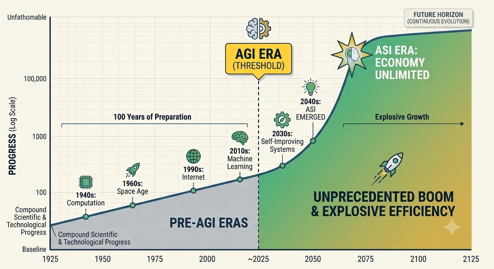

AGI, ASI xuất hiện
Siêu dự báo

Artificial Superintelligence - trí tuệ vượt xa con người trên hầu hết mọi lĩnh vực nhận thức.
Nếu ASI xuất hiện và:
• Thiết kế sản phẩm gần như tức thời.
• Tối ưu hóa chuỗi cung ứng toàn cầu.
• Robot hóa phần lớn sản xuất.
• Giảm mạnh chi phí tri thức.
thì thứ trở nên khan hiếm không còn là trí tuệ.
Thứ khan hiếm là:
• Đất đai.
• Năng lượng.
• Tài nguyên.
• Hạ tầng vật lý chiến lược.
• Các chokepoint logistics.
Nếu ASI tạo ra một cuộc bùng nổ năng suất toàn cầu, giá trị có thể dịch chuyển từ các tài sản tri thức sang các tài sản vật lý khan hiếm. Trong kịch bản đó, các cảng nước sâu chiến lược, hệ thống năng lượng và hạ tầng logistics, đất đai có thể trở thành những tài sản hưởng lợi lớn nhất.